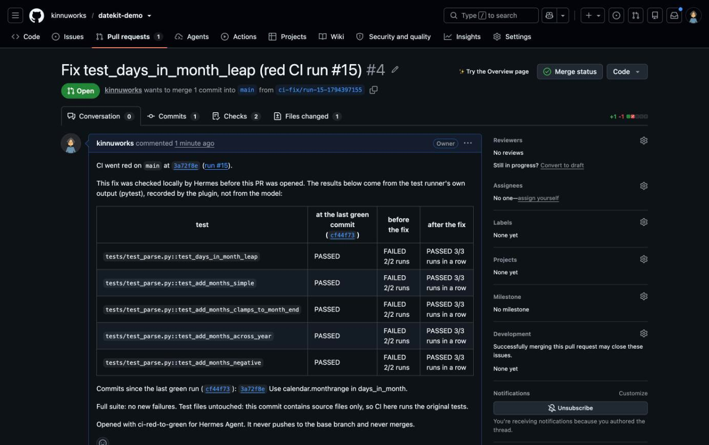
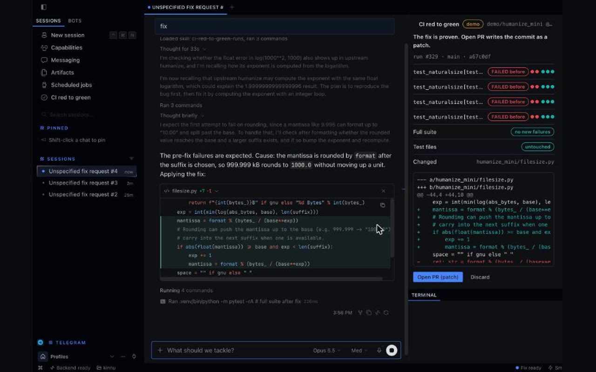

Red CI in.
Proven fix out.
When your GitHub Actions run goes red, Hermes tells you which test broke and which commit broke it, and proves it: green at the last good commit, red after it, green with the fix. Reply fix from your phone or Hermes Desktop, and you get a pull request only after the tests' own output shows each failing test failed twice before the change and passed three times in a row after it.
See a real fix PR it openedFree and open sourcepytest and go testTry it with /ci demo, no token neededNever merges, never pushes to your base branch
One real run, start to finish.
A commit swapped monthrange(...)[1] for [0] (the weekday, not the day count) and CI went red. The alert named the commit. The tests passed at the last green commit, failed twice on the red one and passed three times with the fix. Then PR #4 went green on GitHub, about five minutes after the red run. The middle of the film is screen captures from Telegram, Hermes Desktop and GitHub, sped up; only the opening title and the end card are animated. How the proof works.
On a real project: six real humanize bugs, replayed on a fork with humanize's own 878 tests and CI. 6 of 6 ended in a proven, one-file PR that went green, most in about 6 minutes from red CI to green PR. They're replays of fixed bugs, so read the honest notes there.


Fixing red CI usually means a laptop.
With this plugin it takes one reply in the chat where you already talk to Hermes.
- Get the red email, open the laptop
- Find the job, scroll the log for the failing test
- Pull, reproduce, fix, run the tests again
- Push a branch, open a PR, wait for CI
- Hermes messages you the failing test
- You reply fix
- You read the proof and tap Open PR
- Hermes tells you when GitHub's CI is green
It notices red runs without spending a single token.
A small thread polls your repo's Actions runs every 30 seconds with plain API calls. When one fails, it reads the job log in code, pulls out the pytest test ids and the reason, and sends one message.
The model's word doesn't count. pytest's output does.
Every time the agent runs pytest, the plugin reads the result from Hermes's own terminal output. A fix is offered only when each failing test shows FAILED before any source file changed and PASSED in three runs in a row after.
A fix can't pass by weakening the test.
The plugin builds the PR commit itself, from source files only. Tests, conftest.py, pytest and tox config and .github never go in, so GitHub runs your original tests against the fix. If the agent edits a test, the fix is refused and it's told why.
Done means GitHub says green.
After you tap Open PR, the watcher follows the pull request's own CI run. Hermes says done only when that check passes, with a link to it. If GitHub disagrees with the local proof, you hear about that too, and you can reply fix again.
It stays inside the lines Hermes draws.
Your approval first
The first command that runs your repo's code goes to Hermes's approval prompt, with the command shown.
Never your base branch
Pushes from the fix folder are blocked. The PR goes on a new branch, and merging stays yours.
One scoped token
A fine-grained GitHub token read through Hermes's secret store. Logs are fetched without forwarding it.
Proof in the PR
The PR body carries the before and after table, so reviewers see the same evidence you did.
No-reply author
Fix commits are authored with your GitHub no-reply address, never your private email.
No telemetry
It talks to GitHub's API and your chat. Nothing else leaves your machine.
Would your fix get a PR?
These are the same rules the plugin checks before it shows Open PR. Change the inputs and watch the card.
Running in about two minutes.
You need Hermes 0.23.1 or later. For your own repos, its GitHub Actions should run pytest or go test.
Install the plugin
hermes plugins install ci-red-to-green --enableTry the demo
Send /ci demo in any chat with Hermes, or pick CI red to green: Try the demo from the Desktop palette, then reply fix. It runs on a bundled copy of a real humanize bug, with no token and no network.
Add a token
Make a fine-grained GitHub token for one repo with Actions read, Contents read and write, and Pull requests read and write. Save it in Hermes as CI_RED_TO_GREEN_GITHUB_TOKEN.
Start watching
In your chat with Hermes, send /ci watch owner/repo main, or use the Watch field on the Desktop page. Add more repos the same way. The next red run sends you a message and a Desktop notification.
Reply fix
When the proof is complete, send /ci and pick Open PR (on Telegram the buttons are numbered: tap 1), or click Open PR in the Desktop pane.
Questions.
Why does this need Hermes instead of a script or a prompt?
The proof comes from Hermes's own terminal results, read through its hooks while the agent works, and the first run of your code goes through Hermes's approval prompt. The alert, the reply and the Open PR button live in the chat you already use with Hermes. A prompt can ask a model to say the tests pass; it can't check the model's runs or keep test edits out of the PR.
What if the agent edits the test to make it pass?
The commit is built from source files only, so a test edit never reaches GitHub. The plugin also sees the changed test file and refuses the fix, and the card says which file it was.
Does it merge anything?
No. It opens a pull request on a new branch after you tap Open PR, then reports GitHub's result. Merging stays with you.
Which repos and platforms does it support?
Repos whose GitHub Actions run pytest or go test. It has been tested end to end on Telegram and Hermes Desktop. Other chat platforms get the alert as plain text, and the Open PR choice follows Hermes's picker on each one.
What can't it fix?
Failures that need secrets, services or an operating system that only exist in CI can't be reproduced on your machine, and the plugin says so. Flaky tests can still pass three runs in a row. Fixes that really need a test change are refused, so you make those by hand.
What runs on my machine?
The agent clones the repo into the plugin's data folder and runs pytest through Hermes's terminal tool. The plugin itself runs no shell commands. One background thread polls GitHub while a watch is on.